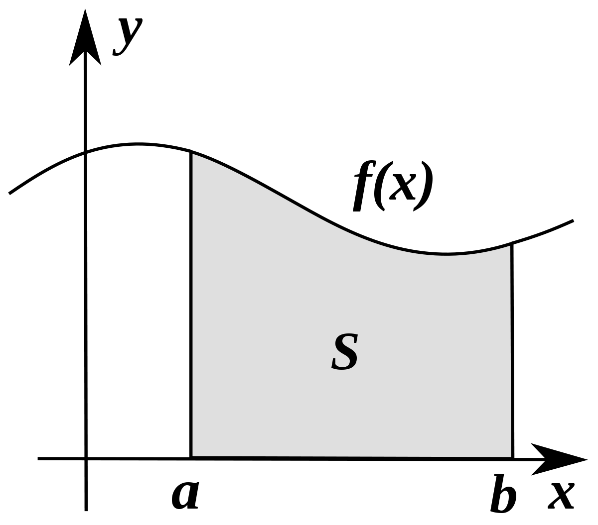

En matemáticas, las integrales son herramientas poderosas que nos permiten calcular el área bajo
una
curva, la acumulación de cantidades y muchos otros conceptos importantes. Hay dos tipos
principales
de
integrales: las integrales definidas e indefinidas.

1. Integral Indefinida:
Imagina que tienes una función que describe cómo cambia una cantidad con respecto a otra,
digamos
f(x).
La integral indefinida de f(x), denotada por ∫ f(x) dx, nos da una nueva función F(x) tal que su
derivada es igual a f(x). En otras palabras:
F'(x) = f(x)
Puedes pensar en esto como encontrar la función original a partir de su tasa de cambio.
2. Integral Definida:
Ahora, si estamos interesados en calcular el área bajo la curva de f(x) entre dos puntos a y b,
usamos
la integral definida, denotada por:
∫[a to b] f(x) dx
Esta integral nos da el área entre la curva y el eje x en el intervalo [a, b]. Gráficamente, es
el
área
encerrada bajo la curva.
Relación con la Derivada:
Existe una relación fundamental entre las integrales y las derivadas, conocida como el Teorema
Fundamental del Cálculo. Este teorema establece que la integral definida de una función f(x)
entre
dos
puntos a y b es igual a la diferencia entre los valores de la función primitiva en esos dos
puntos:
∫[a to b] f(x) dx = F(b) - F(a)
Esto conecta las integrales con las funciones antiderivadas y nos proporciona una poderosa
herramienta
para calcular áreas y acumulaciones.